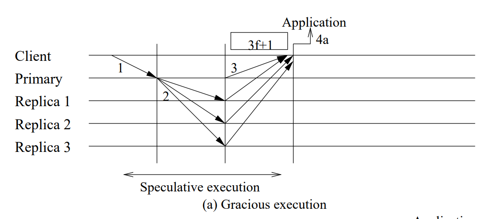
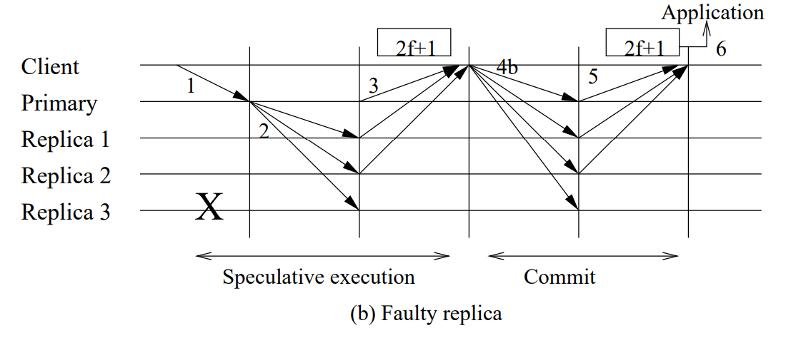
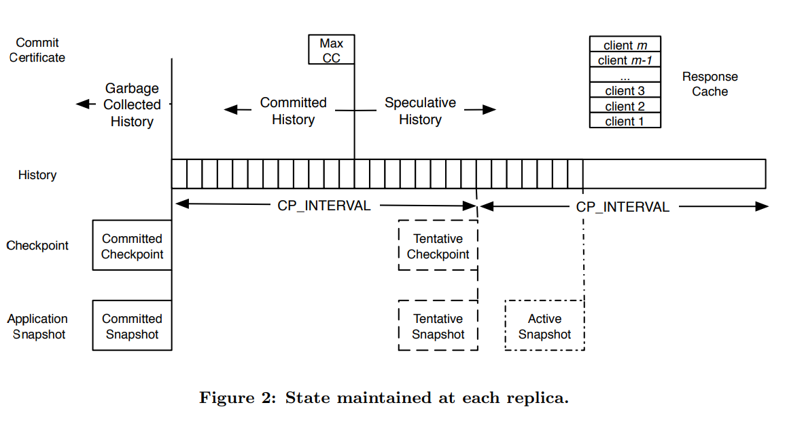

Abstract
Zyzzyva是一种使用投机来降低成本并简化拜占庭容错状态机复制设计的协议。在 Zyzzyva 中，副本响应客户端的请求，而无需首先运行昂贵的三阶段提交协议来就必须处理请求的顺序达成一致。相反，他们乐观地采纳primary提出的命令并立即响应客户。因此，副本可能会暂时彼此不一致，但客户端会检测到不一致，帮助正确的副本收敛于请求的一种全序，并且仅依赖于与该全序一致的响应。这种方法使Zyzzyva能够将复制的开销减少到接近理论上的最小值。
1. Introduction
三个趋势吸引BFT的实际部署：
-
数据不断提升的价值和越来越便宜的硬件成本，服务提供商用越来越不昂贵的硬件换取BFT部署带来的安心是值得的。
-
在实际系统中，越来越多的non-fail-stop的证据表明，即使不采用n-version programming，BFT也可能产生显著的好处。(不懂这个)
-
对BFT复制技术现状的改进，通过缩小BFT复制成本与非BFT复制的已支付成本之间的差距，使BFT复制越来越实用。
Zyzzyva, 一个新的协议，使用投机来减少成本并简化BFT状态机复制的设计。如同传统的状态机复制协议，一个primary对其他副本关于来自客户的请求提出一个顺序。在Zyzzyva中，不像传统的协议，副本投机性地执行请求而无需运行昂贵的协定协议(agreement protocol)去确定性地建立顺序。作为结果，正确的副本状态可能会分岔，副本也可能发送不同的响应给客户端。然而，客户端的应用程序观察复制状态机的传统和强大的抽象，该状态机以线性的顺序执行请求，因为回复带有足够的历史信息，供客户确定回复和历史是否stable并保证最终提交。如果投机的回复和历史stable，则客户端使用回复。否则的话，客户等待直到系统收敛到一个stable回复和历史。（回复：reply; 历史：histoty）
Zyzzyva 面临的挑战是确保对正确客户端的响应变得稳定。最终，副本负责确保所有来自正确的客户端的请求最终完成，但等待回复和历史变得稳定的客户端可以通过提供信息来加速这一过程，这些信息将导致请求在当前视图中迅速变得稳定，或者触发视图的变化。请注意，由于客户端不要求请求提交，只要求请求变得稳定，所以客户端对请求的行动只需要一到两个阶段，而不是习惯上的三个阶段。从本质上讲，Zyzzyva 重新考虑了 BFT 的同步：我们不是悲观地确保副本在与客户端通信之前就请求建立最终顺序，而是将输出提交移至客户端。以这种方式利用客户能提供重大的实际优势。 与PBFT在内的一些协议比较，对于要求苛刻的工作负载，Zyzzyva 减少了加密开销并将峰值吞吐量提高了两倍。事实上，Zyzzyva的复制成本、处理开销和通信延迟接近其理论下限。
2. System Model
我们假设拜占庭故障模型，其中故障节点（副本或客户端）可能会任意行为。我们假设有一个强大的对手可以协调故障节点来破坏复制的服务。然而，我们确实假设对手无法破解密码技术，如抗碰撞散列、加密和签名。我们的系统确保其最多 f个副本的liveness和safety属性出现故障。我们假设客户端数量有限，其中任何数量都可能有故障。
我们的系统的safety性质在任何异步的分布式系统中。其中节点通过网络连接，可能无法传递消息、损坏消息、延迟消息或乱序传递。然而，Liveness仅在发送到正确节点的消息在从发送消息时起的某个固定（但可能未知）的最坏情况延迟内得到处理的间隔期间才能确保活性。
我们的系统使用状态机复制实现 BFT 服务。传统的状态机复制技术只能应用于确定性服务。我们通过在副本上抽象可观察的应用程序状态并使用协议阶段来解决分歧来应对许多实际应用程序（例如文件系统和数据库）中存在的不确定性。服务通过对客户端进行身份验证、强制访问控制以拒绝客户端访问他们无权访问的对象，以及（可选地）维护共享数据的多个版本（例如，文件系统中的快照，以便如果有故障的客户端破坏了数据，可以从旧版本中恢复数据。
3. Protocol
Zyzzyva 是一种基于三个子协议的状态机复制协议：(1) agreement，(2) view change，和 (3) checkpoint。 agreement协议对副本要执行的请求请进排序。当前primary出现故障或系统运行缓慢时，view change协议会协调新primary的选举。check point协议限制了副本必须存储的状态，并降低了view change的成本。
Principles and Challenges
Zyzzyva关注客户端观察到的safety性质。在Zyzzyva中，副本变的短暂地与其他副本不一致，但是客户可以检测到不一致，并且驱使副本收敛到一个请求的全序上，并且仅依赖于与该全序一致的响应。
鉴于一些BFT 复制协议已经赋予过客户端的职责，所以将输出提交完全移至客户端并不是一大步，但这一小步带来了巨大的回报。首先，Zyzzyva利用投机的执行——副本在它的顺序被完全建立之前执行一个请求。第二，Zyzzyva利用fast agreement protocol在最少三个消息延迟内建立请求排序。第三，一旦客户端知道请求的顺序，agreement sub-protocol就会停止处理请求，从而避免在副本上建立此知识所需的工作。
这为Zyzzyva的设计带来了两个关键挑战。首先，我们必须仔细指定请求在客户端完成的条件，并且定义agreement, checkpoint, 和 view change子协议以保持请求在单个正确状态机上执行的抽象。直观地说，当正确的客户端可以安全地对请求的回复采取行动时，请求就完成了。 为了帮助客户端确定何时适合对回复进行操作，Zyzzyva 将历史信息附加到客户端收到的回复中，以便客户端可以判断回复是否基于相同的请求顺序。 Zyzzyva 确保以下安全条件：
SAF： 如果序列号为 n 且历史记录为 h_n 的请求完成，则任何以更高序列号 n’ ≥ n 完成的请求都具有包含 h_n 作为前缀的历史记录 hn’。
第二， view change子协议必须确保活跃性，尽管agreement子协议在view期间从不需要超过两个阶段来完成。我们将这一工作从agreement子协议转移到view change子协议通过引入一个新的“I hate the primary”阶段来保证一个正确的副本仅仅放弃当前视图，如果它可以确保所有其他正确的副本都将加入叛变。Zyzzyva在eventual synchrony的条件下确保以下liveness：
LIV：由正确的客户端发出的任何请求最终都会完成。
Protocol Overview
Zyzzyva被3f + 1个副本执行，同时执行被组织成一系列视图（views）。在一个视图(view)内，一个单独的副本被设计成primary负责领导agreement子协议。
Fast agreement sub-protocol
客户端发送请求给primary, primary转发请求给副本，同时副本执行请求并发送他们的回复给客户端。请求以两种方式之一在客户端完成。首先，如果客户端收到3f+1个相互一致的回复（包括一个applicaiton-level的reply和它所依赖的history), 之后客户端认为请求完成并基于它做下一步操作。第二，如果客户端收到[2f+1, 3f]个相互一致的请求，那么客户端聚集2f+1个回复。同时分发这个commit certificate给副本们。一旦2f+1个副本承认收到一个commit certificate,那么客户考虑这个请求完成并基于它做下一步操作。
如果有足够数量的副本怀疑当前主节点有故障，则发生视图更改并选举新的主节点。)


3.1 Node State and Checkpoint Protocol
每个副本i维护一个它已经执行了的请求的有序的history和一个已经见过的覆盖最多副本i储存的历史的前缀的max commit certificate的拷贝。History直到并包括max commit certificate所涵盖的具有最高序列号的请求的history是committed history，之后的历史是speculative history。如果 n 是提交历史中任何请求的最高序列号，我们就说提交证书的序列号为 n。
一个副本每CP_INTERVAL次请求构造一个checkpoint。一个副本维护一个stable checkpoint和一个与之对应的stable application state snapshot, 它可能最多储存一个tentative checkpoint和与之对应的tentative application state snapshot。tentative checkpoint点和application state的过程类似于早期 BFT 协议使用的过程。（不太清楚这里，挖个坑，作者在他们的extended report里讨论了这个问题）。做个总结：当一个正确的副本产生一个tentative checkpoint，它发送一个签名的CHECKPOINT消息给所有副本。 消息包括checkpoint里任何请求的最高序列号，以及一个关于检查点的digest和application snapshot。一个正确的Zyzzyva副本认为checkpoint和对应的application snapshot是stable的，当它收到f+1个被不同副本签名的匹配的CHECKPOINT消息
为了限制History的大小，一个副本（1）截断committed checkpoint前的history.（2）封锁新请求的处理，当从committed checkpoint起，处理了2xCP_INTERVAL 个请求。
最后，每个副本维护一个response cache，其中包含来自每个客户端的最新有序请求的副本以及相应的响应。

3.2 Agreement Protocol
图片1说明了一个在一个视图中agreement sub-protocol的基本流程。因为副本在不与其他副本通信的情况下按照主提议的顺序投机地执行请求，关键挑战是确保客户端仅对以全序执行的稳定请求的回复做出行动，并且这些请求保证最终在所有正确的服务器上被提交。要么收到3f+1个匹配的回复；要么从2f+1个副本收到他们对于收到了commit certificate的acknowledgements. 这两个条件中的任何一个都可以证明具有相同的序列号和客户端观察到的先前请求的历史记录的请求最终将在所有正确的副本上提交。
为了描述系统如何处理——丢失的消息、有故障的主服务器、有故障的客户端等。我们通过在系统中跟踪一个请求，定义服务器用来处理每条消息的规则。
这里我省略对于消息内参数的介绍，不是因为我懒，是因为markdown不好打奇奇怪怪的符号，直接看原paper比较好
-
- Client sends request to the primary.
客户端 c 通过向它认为是主要副本（即客户端收到的最后一个响应的主要副本）发送消息来请求复制服务执行操作 o。
-
- Primary receives request, assigns sequence number, and forwards ordered request to replicas.
当primary从客户端收到消息，它会给这个消息在当前视图下分配一个序列号并且转发这个新消息给backup replicas。
-
- Replica receives ordered request, speculatively executes it, and responds to the client.
在收到来自primary的ordered request。副本i接受这个ordered request，如果这个消息是一个良好构造的REQUEST消息。在接受消息后，i将这个排序好的请求添加到它的历史，在当前应用状态上执行这个请求并产生一个回复r，并把它发回给客户端。
-
- Client gathers speculative responses.
客户端收集来自副本的回复。有四种情况需要考虑
-
4a Client receives 3f+1 matching responses and completes the request.
在没有故障的情况下，客户端从所有3f+1个副本收到匹配的回复消息。然后客户端认为请求及其历史是完整的，并将回复 r 传递给应用程序。Zyzzyva 保证即使视图发生变化，所有正确的副本也将始终在其历史记录中的此时执行此请求以产生此响应。 请注意，尽管客户端有证据证明请求在历史记录中的位置是不可撤销的，但没有服务器有这样的证据。 实际上，此时服务器无法确定请求是否已按其最终顺序完成，或者因为有故障的主服务器对请求的排序在副本之间不一致而有必要回滚服务器状态。
-
4b Client receives between 2f + 1 and 3f matching responses, assembles a commit certificate, and transmits the commit certificate to the replicas.
如果网络，primary，和一些副本是故障的，那么客户端可能永远无法收到所有的3f + 1个回复。因此客户端会在第一次发出这个请求时设置一个timer，如果当计时超时，如果客户端从[2f+1,3f]收到匹配的投机回复，那么客户端发送一个包含commit certificate的COMMIT消息。 commit certificate由 2f + 1 个副本的列表，来自这些副本的 2f + 1 个匹配的回复中的副本签名部分以及相应的 2f + 1 个副本签名组成。
-
4b.1 Replica receives a COMMIT message from a client containing a commit certificate and acknowledges with a LOCAL-COMMIT message.
当一个副本i收到包含一个有效的commit certificate的COMMIT消息（这个消息证明一个请求应在当前视图中使用指定的序列号和历史记录执行请求）首先副本会先确定本地history与commit certificate中的一致。如果是的话，副本i (1)如果此证书的序列号高于存储的证书的序列号，则更新自己的max commit certificate状态；(2) 发送一个LOCAL-COMMIT给客户端。
-
4b.2 Client receives a LOCAL-COMMIT messages from 2f + 1 replicas and completes the request.
客户端重新发送COMMIT消息，直到它从 2f + 1 个不同的副本接收到相应的LOCAL-COMMIT消息。 然后客户端认为请求及其历史是complete的，并将回复 r 传递给应用程序。 系统保证即使视图发生变化，所有正确的副本也将始终在其历史记录中的此时执行此请求以产生此响应。
-
4c. Client receives fewer than 2f + 1 matching SPEC-RESPONSE messages and resends its request to all replicas, which forward the request to the primary inorder to ensure the request is assigned a sequencenumber and eventually executed.
Client 如果网络或者主节点出现故障，那么客户端将永远无法从2f+1个副本收集到匹配的SPEC-RESPONSE消息。因此，客户端在第一次发出请求时设置第二个计时器，并在第二个计时器到期时重新向所有副本发送请求消息。 然后它会重置计时器并继续收集推测性响应。
Replica 当一个non-primary副本i从一个客户端收到请求消息，这里有两种副本i可能会采取的行动。（1）如果请求与客户端当前缓存请求匹配或具有比客户端当前缓存请求更低的客户端提供的时间戳，则副本i将缓存的响应重新发送到客户端。（2）如果请求有比客户端当前缓存请求更高的时间戳，那么副本i发送一个CONFIRM-REQ请求给当前的primary并设置一个计时器，如果副本在计时器到期前收到对于这个CONFIRM-REQ请求的ORDER-REQ消息，那么它将投机性地执行这个请求，否则的话，它将发起一个view change请求。
Primary 取决于从副本i收到的CONFIRM-REQ请求，primary首先检查时间戳。 如果请求是新的，primary如步骤 2 中所述使用下一个序列号来发送一个新的ORDER-REQ消息。否则，发送给副本i来自客户端的最新的缓存的ORDER-REQ请求消息。
-
4d. Client receives responses indicating inconsistentordering by the primary and sends a proof of misbehavior to the replicas, which initiate a view change tooust the faulty primary.
如果客户端收到一组对于同一个请求的包含有效ORDER-REQ，但序列号不同的SPEC-RESPONSE消息。那么这就是primary有misbehavior的证明（POM）。客户端会广播这些消息给副本。根据收到的POM，一个副本会发起view change,并转发POM给所有的其他副本。
请注意，情况 4b 和 4c 并不排除 4d； 客户端可能会收到足以完成请求或形成提交证书的消息，以及针对主节点的不当行为的证明。
3.3 View Changes
Fast agreement和投机执行对Zyzzyva的view change 子协议有深刻的影响。view change子协议必须选举一个新的primary并且保证它不会改变已经在正确的客户端完成的历史。为了保持safety性质，传统的view change子协议要求一个提交视图更改请求的正确副本停止接受CHECKPOINT、VIEW-CHANGE和NEW-VIEW消息以外的消息。同时为了防止故障的副本扰乱系统，一个view change子协议应该从未移除一个primary,除非至少一个正确的副本提交了view change，如果 (a) 它观察到primary有故障或 (b) 它有 f + 1 个副本已提交view change的证据。在提交view change时，正确的副本会发送已签名的VIEW-CHANGE消息，这个消息包括新的视图，副本最新stable检查点的序列号(附带稳定证明)，一组prepare certificate——与commit certification等同。
当新primary使用来自不同副本的 2f + 1 条VIEW-CHANGE消息计算所有正确副本必须采用以进入新视图的请求历史时，传统视图更改完成。 新primary将此历史和有效性证明包含在它向所有副本广播的已签名NEW-VIEW消息中。
Zyzzyva 保持了传统协议的整体结构，但它在两个重要方面有所不同，它们共同允许客户端在任何副本知道请求已提交之前接受响应，并允许副本在两个阶段后提交响应，而不是传统的三个阶段。
- 首先，为了确保活跃度，Zyzzyva 通过向view change子协议添加一个新的““I hate the primary”阶段来加强正确副本提交view change的条件。 我们通过考虑The Case of the Missing Phase来解释此添加的必要性和详细信息。
- 其次，为了保证安全，Zyzzyva 弱化了请求出现在NEW-VIEW消息所包含的历史中的条件。 我们通过考虑The Case of the Uncommitted Request来解释此更改的必要性和详细信息。
3.3.1 The Case of the Missing Phase
如果我们观察一个正确的客户端执行4b步骤，并且在副本间实现一个广播信道，我们会发现Zyzzyva的通信模式只能map到PBFT三个阶段中的两个阶段。

第二个问题的答案在于协议和视图更改子协议之间的微妙依赖关系。 没有使用传统view change协议的复制服务能够在没有包含prepare和commit full exchange的agreement协议下运行。考虑以下Zyzzyva情景，假设我们有f个故障副本，他们中的一个是primary，并假设故障的primary导致f个正确的副本提交了一个视图更改请求并且停止在当前视图下发送消息。在这种情况下，一个客户端请求可能只能从剩下的正确副本收集到f+1个回复，不足以让请求在第一阶段或第二阶段完成——而且，因为少于 f+1副本要求视图更改，所以 没有机会通过选举新的 primary 来恢复活力。
传统BFT agreement的第三个阶段打破了这一僵局：通过交换他们所知道的，剩下的f+1个正确的副本可以在仅收到 f+1个匹配回复后收集完成请求所需的证据，或者确定视图更改是必要的。
回到之前的问题，Zyzzyva是如何避免agreement子协议中的第三阶段呢? 在之前的场景中，影响活性是因为传统的view change协议让正确的副本提交视图更改请求后要在这个视图中保持沉默，而不保证它们的操作会导致视图更改。 而在Zyzzyva中，一个正确的副本不会放弃视图v，除非它保证每个其他正确的副本都会做同样的事情，从而强制一个新的视图和一个新的primary
为了确保这个性质，Zyzzyva的view change子协议添加了一个额外的阶段来强化副本停止参与当前视图的条件。一个怀疑视图v的primary正确的副本i，会继续参与当前视图，但是表达它不信任的投票通过广播一个I-HATE-THE-PRIMARY消息给所有的副本。如果i收到f+1个对于v的primary不信任的投票，那么它就会提交一个view change:它会沉默，并且广播给所有副本一个包括f+1个不信任投票的证明的VIEW-CHANGE消息。一个正确的副本收到有效的VIEW-CHANGE消息会加入兵变同时提交view-change。Zyzzyva的view change子协议确保如果一个正确的副本在视图v提交了一个view change，最终所有的正确节点也会提交因为其他正确的节点收到后会立刻加入兵变。 实际上，Zyzzyva 将处理故障primary所需的成本从关键路径（协议协议）转移到view change子协议，该子协议仅在主节点出现故障时运行。将之前在agreement子协议中为view change服务的广播阶段转移到view change子协议中。
3.3.2 The Case of the Uncommitted Request
Zyzzyva的副本们可能从未学习到agreement协议的结果：当一个请求被完成时只有客户端可能知道。Zyzzyva副本怎样定义一个新视图的安全的历史前缀？
在 Zyzzyva 中可以通过两种方式完成请求r及其历史记录。我们先从视图变化的角度考虑问题最少的：它发生在当一个客户端收到2f+1个LOCAL-COMMIT消息，一个请求r完成。这意味着至少f+1个正确的副本现在已经为请求r储存了一个commit certificate. 传统的view change协议已经能够处理这种情况：一个标准的包括所有从最新的stable checkpoint开始的commit certificate的VIEW-CHANGE消息被一个正确的副本发送。新的primary在NEW-VIEW消息中包含所有出现在它收到的任何 2f+1VIEW-CHANGE消息中的commit certificate， 那么至少一个VIEW-CHANGE 消息一定包含一个r的commit certificate. （在客户端处收到2f+1个LOCAL-COMMIT消息的r，它的commit certificate一定出现在2f+1个VIEW-CHANGE消息中）
第二种情况更具有挑战：如果r的完成是因为客户端收到3f+1个匹配的投机回复，那么没有正确的副本会有r的commit certificate。我们处理这种情况通过用两种方式修改view change子协议。第一，正确的副本将从最新的stable checkpoint起收到的所有ORDER-REQ消息或commit certificate添加到VIEW-CHANGE消息中。第二，一个正确的新primary在新视图中要采用的历史记录被扩展，包括所有序列号高于任何最大的commit certificate序列号，且出现在新primary收集到的2f+1个view-change消息的f+1个中的ORDER-REQ消息的请求。
此更改削弱了在一个视图中排好序的请求可以出现在新视图中的条件：我们不再需要commit certificate，但也允许足够数量的ORDER-REQ消息来支持请求的排序。 此更改可确保协议继续履行在客户端收集到3f+1个匹配的投机的回复时完成的任何请求的排序承诺。
请注意，此更改可能会产生将序列号分配给在先前视图中尚未完成的请求的副作用。（收到了f+1个ORDER-REQ,但没有被完成） 特别是，该协议的一个奇怪之处在于，根据primary使用的 2f+1个VIEW-CHANGE消息集，对于给定的序列号，它可能会找到具有f+1个ORDER-REQ消息的不同请求。 然而，这种奇怪是良性的，不会导致系统违反安全性。 特别是，只有在至少一个正确的副本支持每个候选请求的情况下，才会有两个候选请求有相同的序列号。 在这种情况下，如果让客户端接收到3f+1个匹配的响应，则两个候选人都无法完成，系统可以安全地将其中一个（或都不）请求分配给此序列号。（什么情况下出现会这种情况我还没想出来）
[1] http://www.cs.cornell.edu/lorenzo/papers/kotla07Zyzzyva.pdf